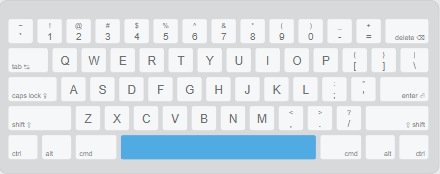

哈囉！這是一份reveal.js簡報
您可以簡單的使用 空白鍵 瀏覽所有頁面
值得一提的是
方向鍵
上、下鍵：可以進行前後翻頁
左、右鍵：往前、後一個章節繼續
簡而言之...
向下到底，再向右
您可以試著按下 ESC鍵 總覽整份簡報
PS1: 觸控螢幕也可以滑動換頁呦
PS2: 同時右下角也有提示
PS3: 沒有PS4 ( QAQ
導覽到此為止
或許您會使用:
- F 或 F11 : 享受全螢幕
- V 或 B : 關閉燈光
- S : 進入演講者模式
您可以使用 空白鍵 或是 右方向鍵 進入下一章節
筆電選購大作戰
大綱
- 影響體驗的四大因素
- 各品牌筆電系列摘要
- 配件的重要性
- NA
影響體驗的四大因素
- 便利性
- 反應速度
- 外觀體驗
- 品牌形象
便利性
- weight : 隨時一手帶著到處跑的輕盈
- size : 隨時塞入手提包，不會太大、太小
- battery : 隨時不中斷的電力支援(10hr up)
- I/O : 隨時想插什麼線，都有孔可以支援
反應速度
- Ram : 暫存記憶體反應速度及大小
- Storge : 硬碟容量大小
- CPU : 中央處理器速度
- (選) GPU : 有玩大型遊戲、渲染高畫質影片需求
( 詳細建議規格會列在簡報最後一頁 )